Chapter 3: Biopsychology¶
Introduction¶
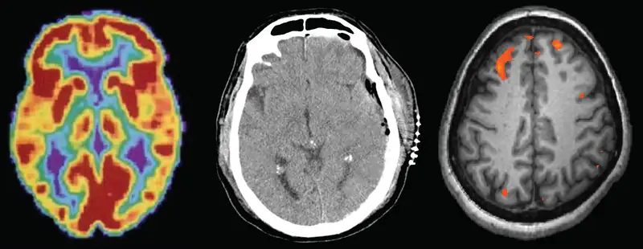
Have you ever taken a device apart to find out how it works? Many of us have done so, whether to attempt a repair or simply to satisfy our curiosity. A device’s internal workings are often distinct from its user interface on the outside. For example, we don’t think about microchips and circuits when we turn up the volume on a mobile phone; instead, we think about getting the volume just right. Similarly, the inner workings of the human body are often distinct from the external expression of those workings. It is the job of psychologists to find the connection between these—for example, to figure out how the firings of millions of neurons become a thought.
This chapter strives to explain the biological mechanisms that underlie behavior. These physiological and anatomical foundations are the basis for many areas of psychology. In this chapter, you will learn how genetics influence both physiological and psychological traits. You will become familiar with the structure and function of the nervous system. And, finally, you will learn how the nervous system interacts with the endocrine system.
3.1 Human Genetics¶
Learning Objectives
By the end of this section, you will be able to:
- Explain the basic principles of the theory of evolution by natural selection
- Describe the differences between genotype and phenotype
- Discuss how gene-environment interactions are critical for expression of physical and psychological characteristics
Psychological researchers study genetics in order to better understand the biological factors that contribute to certain behaviors. While all humans share certain biological mechanisms, we are each unique. And while our bodies have many of the same parts—brains and hormones and cells with genetic codes—these are expressed in a wide variety of behaviors, thoughts, and reactions.
Why do two people infected by the same disease have different outcomes: one surviving and one succumbing to the ailment? How are genetic diseases passed through family lines? Are there genetic components to psychological disorders, such as depression or schizophrenia? To what extent might there be a psychological basis to health conditions such as childhood obesity?
To explore these questions, let’s start by focusing on a specific genetic disorder, sickle cell anemia, and how it might manifest in two affected sisters. Sickle-cell anemia is a genetic condition in which red blood cells, which are normally round, take on a crescent-like shape (Figure 3.2). The changed shape of these cells affects how they function: sickle-shaped cells can clog blood vessels and block blood flow, leading to high fever, severe pain, swelling, and tissue damage.
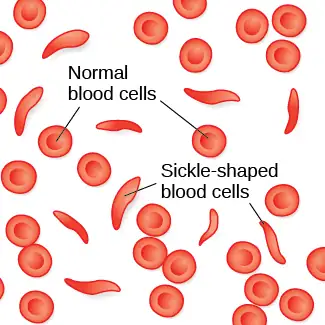
Many people with sickle-cell anemia—and the particular genetic mutation that causes it—die at an early age. While the notion of “survival of the fittest” may suggest that people with this disorder have a low survival rate and therefore the disorder will become less common, this is not the case. Despite the negative evolutionary effects associated with this genetic mutation, the sickle-cell gene remains relatively common among people of African descent. Why is this? The explanation is illustrated with the following scenario.
Imagine two young women—Luwi and Sena—sisters in rural Zambia, Africa. Luwi carries the gene for sickle-cell anemia; Sena does not carry the gene. Sickle-cell carriers have one copy of the sickle-cell gene but do not have full-blown sickle-cell anemia. They experience symptoms only if they are severely dehydrated or are deprived of oxygen (as in mountain climbing). Carriers are thought to be immune to malaria (an often deadly disease that is widespread in tropical climates) because changes in their blood chemistry and immune functioning prevent the malaria parasite from having its effects (Gong, Parikh, Rosenthal, & Greenhouse, 2013). However, full-blown sickle-cell anemia, with two copies of the sickle-cell gene, does not provide immunity to malaria.
While walking home from school, both sisters are bitten by mosquitoes carrying the malaria parasite. Luwi is protected against malaria because she carries the sickle-cell mutation. Sena, on the other hand, develops malaria and dies just two weeks later. Luwi survives and eventually has children, to whom she may pass on the sickle-cell mutation.
Link to Learning
Visit this website about how a mutation in DNA leads to sickle cell anemia to learn more.
Malaria is rare in the United States, so the sickle-cell gene benefits nobody: the gene manifests primarily in minor health problems for carriers with one copy, or a severe full-blown disease with no health benefits for carriers with two copies. However, the situation is quite different in other parts of the world. In parts of Africa where malaria is prevalent, having the sickle-cell mutation does provide health benefits for carriers (protection from malaria).
The story of malaria fits with Charles Darwin's theory of evolution by natural selection (Figure 3.3). In simple terms, the theory states that organisms that are better suited for their environment will survive and reproduce, while those that are poorly suited for their environment will die off. In our example, we can see that, as a carrier, Luwi’s mutation is highly adaptive in her African homeland; however, if she resided in the United States (where malaria is rare), her mutation could prove costly—with a high probability of the disease in her descendants and minor health problems of her own.
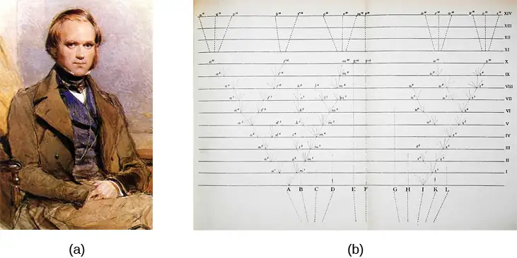
Dig Deeper: Two Perspectives on Genetics and Behavior
It’s easy to get confused about two fields that study the interaction of genes and the environment, such as the fields of evolutionary psychology and behavioral genetics. How can we tell them apart?
In both fields, it is understood that genes not only code for particular traits, but also contribute to certain patterns of cognition and behavior. Evolutionary psychology focuses on how universal patterns of behavior and cognitive processes have evolved over time. Therefore, variations in cognition and behavior would make individuals more or less successful in reproducing and passing those genes on to their offspring. Evolutionary psychologists study a variety of psychological phenomena that may have evolved as adaptations, including fear response, food preferences, mate selection, and cooperative behaviors (Confer et al., 2010).
Whereas evolutionary psychologists focus on universal patterns that evolved over millions of years, behavioral geneticists study how individual differences arise, in the present, through the interaction of genes and the environment. When studying human behavior, behavioral geneticists often employ twin and adoption studies to research questions of interest. Twin studies compare the likelihood that a given behavioral trait is shared among identical and fraternal twins; adoption studies compare those rates among biologically related relatives and adopted relatives. Both approaches provide some insight into the relative importance of genes and environment for the expression of a given trait.
Link to Learning
Watch this interview with renowned evolutionary psychologist David Buss to learn more about how a psychologist approaches evolution and how this approach fits within the social sciences.
Genetic Variation¶
Genetic variation, the genetic difference between individuals, is what contributes to a species’ adaptation to its environment. In humans, genetic variation begins with an egg, about 100 million sperm, and fertilization. Roughly once per month, active ovaries release an egg from follicles. During the egg's journey from the ovary through the fallopian tubes, to the uterus, a sperm may fertilize the egg.
The egg and the sperm each contain 23 chromosomes. Chromosomes are long strings of genetic material known as deoxyribonucleic acid (DNA). DNA is a helix-shaped molecule made up of nucleotide base pairs. In each chromosome, sequences of DNA make up genes that control or partially control a number of visible characteristics, known as traits, such as eye color, hair color, and so on. A single gene may have multiple possible variations, or alleles. An allele is a specific version of a gene. So, a given gene may code for the trait of hair color, and the different alleles of that gene affect which hair color an individual has.
When a sperm and egg fuse, their 23 chromosomes combine to create a zygote with 46 chromosomes (23 pairs). Therefore, each parent contributes half the genetic information carried by the offspring; the resulting physical characteristics of the offspring (called the phenotype) are determined by the interaction of genetic material supplied by the sperm and egg (called the genotype). A person’s genotype is the genetic makeup of that individual. Phenotype, on the other hand, refers to the individual’s inherited physical characteristics, which are a combination of genetic and environmental influences (Figure 3.4).
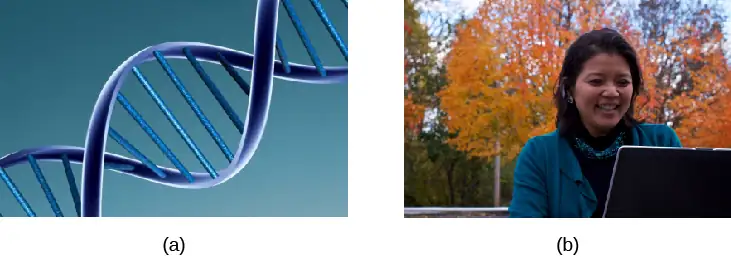
Note that, in genetics and reproduction, "parent" is often used to describe the individual organisms that contribute genetic material to offspring, usually in the form of gamete cells (sperm and egg). The concept of a genetic parent is distinct from social and legal concepts of parenthood, and may differ from those whom people consider their parents.
Most traits are controlled by multiple genes, but some traits are controlled by one gene. A characteristic like cleft chin, for example, is influenced by a single gene from each parent. In this example, we will call the gene for cleft chin “B,” and the gene for smooth chin “b.” Cleft chin is a dominant trait, which means that having the dominant allele either from one parent (Bb) or both parents (BB) will always result in the phenotype associated with the dominant allele. When someone has two copies of the same allele, they are said to be homozygous for that allele. When someone has a combination of alleles for a given gene, they are said to be heterozygous. For example, smooth chin is a recessive trait, which means that an individual will only display the smooth chin phenotype if they are homozygous for that recessive allele (bb).
Imagine that a person with a cleft chin mates with a person with a smooth chin. What type of chin will their offspring have? The answer to that depends on which alleles each parent carries. If the person with a cleft is homozygous for cleft chin (BB), their offspring will always have cleft chin. It gets a little more complicated, however, if the person is heterozygous for this gene (Bb). Since the other person has a smooth chin—therefore homozygous for the recessive allele (bb)—we can expect the offspring to have a 50% chance of having a cleft chin and a 50% chance of having a smooth chin (Figure 3.5).
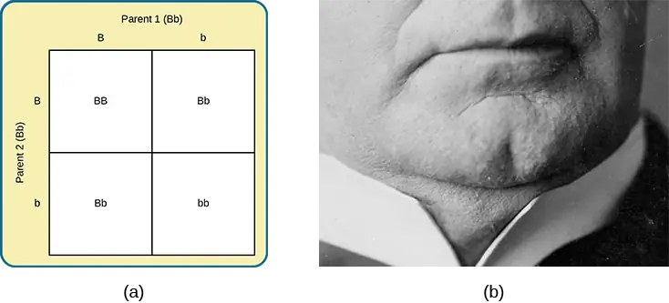
In sickle cell anemia, heterozygous carriers (like Luwi from the example) can develop blood resistance to malaria infection while those who are homozygous (like Sena, who did not have the genetic variant) may develop malaria, a potentially lethal blood disorder. Others who are homozygous (by having two copies of the sickle cell gene) have sickle-cell anemia, another potentially lethal blood disorder. Sickle-cell anemia is just one of many genetic disorders caused by the pairing of two recessive genes. For example, phenylketonuria (PKU) is a condition in which individuals lack an enzyme that normally converts harmful amino acids into harmless byproducts. If someone with this condition goes untreated, they will experience significant deficits in cognitive function, seizures, and an increased risk of various psychiatric disorders. Because PKU is a recessive trait, each parent must have at least one copy of the recessive allele in order to produce a child with the condition (Figure 3.6).
So far, we have discussed traits that involve just one gene, but few human characteristics are controlled by a single gene. Most traits are polygenic: controlled by more than one gene. Height is one example of a polygenic trait, as are skin color and weight.
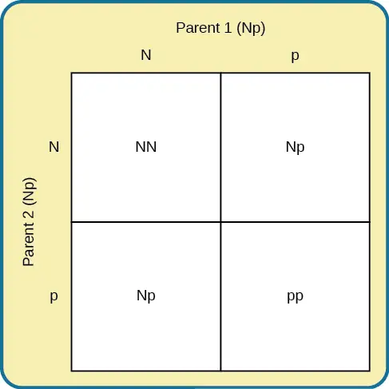
Where do harmful genes that contribute to diseases like PKU come from? Gene mutations provide one source of harmful genes. A mutation is a sudden, permanent change in a gene. While many mutations can be harmful or lethal, once in a while, a mutation benefits an individual by giving that person an advantage over those who do not have the mutation. Recall that the theory of evolution asserts that individuals best adapted to their particular environments are more likely to reproduce and pass on their genes to future generations. In order for this process to occur, there must be competition—more technically, there must be variability in genes (and resultant traits) that allow for variation in adaptability to the environment. If a population consisted of identical individuals, then any dramatic changes in the environment would affect everyone in the same way, and there would be no variation in selection. In contrast, diversity in genes and associated traits allows some individuals to perform slightly better than others when faced with environmental change. This creates a distinct advantage for individuals best suited for their environments in terms of successful reproduction and genetic transmission.
Dig Deeper: Human Diversity
This chapter focuses on biology. Later in this course you will learn about social psychology and issues of race, prejudice, and discrimination. When we focus strictly on biology, race becomes a weak construct. After the sequencing of the human genome at the turn of the millennium, many scientists began to argue that race was not a useful variable in genetic research and that its continued use represents a potential source of confusion and harm. The racial categories that some believed to be helpful in studying genetic diversity in humans are largely irrelevant. A person's skin tone, eye color, and hair texture are functions of their genetic makeups, but there is actually more genetic variation within a given racial category than there is between racial categories. In some cases, focus on race has led to difficulties with misdiagnoses and/or under-diagnoses of diseases ranging from sickle cell anemia to cystic fibrosis. Some argue that we need to distinguish between ancestry and race and then focus on ancestry. This approach would facilitate greater understanding of human genetic diversity (Yudell, Roberts, DeSalle, & Tishkoff, 2016).
Gene-Environment Interactions¶
Genes do not exist in a vacuum. Although we are all biological organisms, we also exist in an environment that is incredibly important in determining not only when and how our genes express themselves, but also in what combination. Each of us represents a unique interaction between our genetic makeup and our environment; range of reaction is one way to describe this interaction. Range of reaction asserts that our genes set the boundaries within which we can operate, and our environment interacts with the genes to determine where in that range we will fall. For example, if an individual’s genetic makeup predisposes them to high levels of intellectual potential and they are reared in a rich, stimulating environment, then they will be more likely to achieve full potential than if they were raised under conditions of significant deprivation. According to the concept of range of reaction, genes set definite limits on potential, and environment determines how much of that potential is achieved. Some disagree with this theory and argue that genes do not set a limit on a person’s potential with reaction norms being determined by the environment. For example, when individuals experience neglect or abuse early in life, they are more likely to exhibit adverse psychological and/or physical conditions that can last throughout their lives. These conditions may develop as a function of the negative environmental experiences in individuals from dissimilar genetic backgrounds (Miguel, Pereira, Silveira, & Meaney, 2019; Short & Baram, 2019).
Another perspective on the interaction between genes and the environment is the concept of genetic environmental correlation. Stated simply, our genes influence our environment, and our environment influences the expression of our genes (Figure 3.7). Not only do our genes and environment interact, as in range of reaction, but they also influence one another bidirectionally. For example, the child of an NBA player would probably be exposed to basketball from an early age. Such exposure might allow the child to realize their full genetic, athletic potential. Thus, the parents’ genes, which the child shares, influence the child’s environment, and that environment, in turn, is well suited to support the child’s genetic potential.
In another approach to gene-environment interactions, the field of epigenetics looks beyond the genotype itself and studies how the same genotype can be expressed in different ways. In other words, researchers study how the same genotype can lead to very different phenotypes. As mentioned earlier, gene expression is often influenced by environmental context in ways that are not entirely obvious. For instance, identical twins share the same genetic information (identical twins develop from a single fertilized egg that split, so the genetic material is exactly the same in each; in contrast, fraternal twins usually result from two different eggs fertilized by different sperm, so the genetic material varies as with non-twin siblings). But even with identical genes, there remains an incredible amount of variability in how gene expression can unfold over the course of each twin’s life. Sometimes, one twin will develop a disease and the other will not. In one example, Aliya, an identical twin, died from cancer at age 7, but her twin, now 19 years old, has never had cancer. Although these individuals share an identical genotype, their phenotypes differ as a result of how that genetic information is expressed over time and through their unique environmental interactions. The epigenetic perspective is very different from range of reaction, because here the genotype is not fixed and limited.
Link to Learning
Watch this video about the epigenetics of twin studies to learn more.
Genes affect more than our physical characteristics. Indeed, scientists have found genetic linkages to a number of behavioral characteristics, ranging from basic personality traits to sexual orientation to spirituality (for examples, see Mustanski et al., 2005; Comings, Gonzales, Saucier, Johnson, & MacMurray, 2000). Genes are also associated with temperament and a number of psychological disorders, such as depression and schizophrenia. So while it is true that genes provide the biological blueprints for our cells, tissues, organs, and body, they also have a significant impact on our experiences and our behaviors.
Let’s look at the following findings regarding schizophrenia in light of our three views of gene-environment interactions. Which view do you think best explains this evidence?
In a 2004 study by Tienari and colleagues, adoptees whose biological mothers had schizophrenia and who had been raised in a disturbed family environment were much more likely to develop schizophrenia or another psychotic disorder than were any of the other groups in the study:
- Of adoptees whose biological mothers had schizophrenia (high genetic risk) and who were raised in disturbed family environments, 36.8% were likely to develop schizophrenia.
- Of adoptees whose biological mothers had schizophrenia (high genetic risk) and who were raised in healthy family environments, 5.8% were likely to develop schizophrenia.
- Of adoptees with a low genetic risk (whose mothers did not have schizophrenia) and who were raised in disturbed family environments, 5.3% were likely to develop schizophrenia.
- Of adoptees with a low genetic risk (whose mothers did not have schizophrenia) and who were raised in healthy family environments, 4.8% were likely to develop schizophrenia.
The study shows that adoptees with high genetic risk were most likely to develop schizophrenia if they were raised in disturbed home environments. This research lends credibility to the notion that both genetic vulnerability and environmental stress are necessary for schizophrenia to develop, and that genes alone do not tell the full tale.
3.2 Cells of the Nervous System¶
Learning Objectives
By the end of this section, you will be able to:
- Identify the basic parts of a neuron
- Describe how neurons communicate with each other
- Explain how drugs act as agonists or antagonists for a given neurotransmitter system
Psychologists striving to understand the human mind may study the nervous system. Learning how the body's cells and organs function can help us understand the biological basis of human psychology. The nervous system is composed of two basic cell types: glial cells (also known as glia) and neurons. Glial cells are traditionally thought to play a supportive role to neurons, both physically and metabolically. Glial cells provide scaffolding on which the nervous system is built, help neurons line up closely with each other to allow neuronal communication, provide insulation to neurons, transport nutrients and waste products, and mediate immune responses. For years, researchers believed that there were many more glial cells than neurons; however, more recent work from Suzanna Herculano-Houzel's laboratory has called this long-standing assumption into question and has provided important evidence that there may be a nearly 1:1 ratio of glia cells to neurons. This is important because it suggests that human brains are more similar to other primate brains than previously thought (Azevedo et al, 2009; Herculano-Houzel, 2012; Herculano-Houzel, 2009). Neurons, on the other hand, serve as interconnected information processors that are essential for all of the tasks of the nervous system. This section briefly describes the structure and function of neurons.
Neuron Structure¶
Neurons are the central building blocks of the nervous system, 100 billion strong at birth. Like all cells, neurons consist of several different parts, each serving a specialized function (Figure 3.8). A neuron’s outer surface is made up of a semipermeable membrane. This membrane allows smaller molecules and molecules without an electrical charge to pass through it, while stopping larger or highly charged molecules.
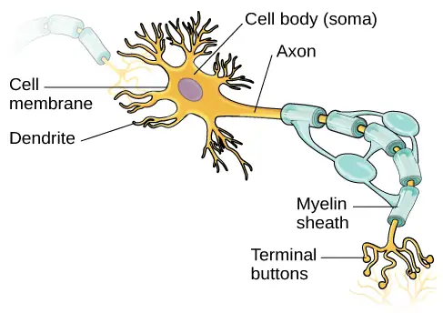
The nucleus of the neuron is located in the soma, or cell body. The soma has branching extensions known as dendrites. The neuron is a small information processor, and dendrites serve as input sites where signals are received from other neurons. These signals are transmitted electrically across the soma and down a major extension from the soma known as the axon, which ends at multiple terminal buttons. The terminal buttons contain synaptic vesicles that house neurotransmitters, the chemical messengers of the nervous system.
Axons range in length from a fraction of an inch to several feet. In some axons, glial cells form a fatty substance known as the myelin sheath, which coats the axon and acts as an insulator, increasing the speed at which the signal travels. The myelin sheath is not continuous and there are small gaps that occur down the length of the axon. These gaps in the myelin sheath are known as the Nodes of Ranvier. The myelin sheath is crucial for the normal operation of the neurons within the nervous system: the loss of the insulation it provides can be detrimental to normal function. To understand how this works, let’s consider an example. PKU, a genetic disorder discussed earlier, causes a reduction in myelin and abnormalities in white matter cortical and subcortical structures. The disorder is associated with a variety of issues including severe cognitive deficits, exaggerated reflexes, and seizures (Anderson & Leuzzi, 2010; Huttenlocher, 2000). Another disorder, multiple sclerosis (MS), an autoimmune disorder, involves a large-scale loss of the myelin sheath on axons throughout the nervous system. The resulting interference in the electrical signal prevents the quick transmittal of information by neurons and can lead to a number of symptoms, such as dizziness, fatigue, loss of motor control, and sexual dysfunction. While some treatments may help to modify the course of the disease and manage certain symptoms, there is currently no known cure for multiple sclerosis.
In healthy individuals, the neuronal signal moves rapidly down the axon to the terminal buttons, where synaptic vesicles release neurotransmitters into the synaptic cleft (Figure 3.9). The synaptic cleft is a very small space between two neurons and is an important site where communication between neurons occurs. Once neurotransmitters are released into the synaptic cleft, they travel across it and bind with corresponding receptors on the dendrite of an adjacent neuron. Receptors, proteins on the cell surface where neurotransmitters attach, vary in shape, with different shapes “matching” different neurotransmitters.
How does a neurotransmitter “know” which receptor to bind to? The neurotransmitter and the receptor have what is referred to as a lock-and-key relationship—specific neurotransmitters fit specific receptors similar to how a key fits a lock. The neurotransmitter binds to any receptor that it fits.
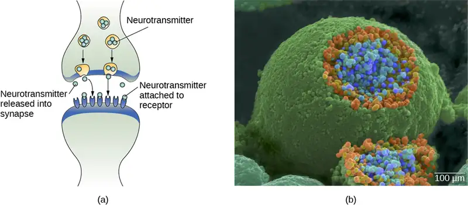
Neuronal Communication¶
Now that we have learned about the basic structures of the neuron and the role that these structures play in neuronal communication, let’s take a closer look at the signal itself—how it moves through the neuron and then jumps to the next neuron, where the process is repeated.
We begin at the neuronal membrane. The neuron exists in a fluid environment—it is surrounded by extracellular fluid and contains intracellular fluid (i.e., cytoplasm). The neuronal membrane keeps these two fluids separate—a critical role because the electrical signal that passes through the neuron depends on the intra- and extracellular fluids being electrically different. This difference in charge across the membrane, called the membrane potential, provides energy for the signal.
The electrical charge of the fluids is caused by charged molecules (ions) dissolved in the fluid. The semipermeable nature of the neuronal membrane somewhat restricts the movement of these charged molecules, and, as a result, some of the charged particles tend to become more concentrated either inside or outside the cell.
Between signals, the neuron membrane’s potential is held in a state of readiness, called the resting potential. Like a rubber band stretched out and waiting to spring into action, ions line up on either side of the cell membrane, ready to rush across the membrane when the neuron goes active and the membrane opens its gates. Ions in high-concentration areas are ready to move to low-concentration areas, and positive ions are ready to move to areas with a negative charge.
In the resting state, sodium (Na+) is at higher concentrations outside the cell, so it will tend to move into the cell. Potassium (K+), on the other hand, is more concentrated inside the cell, and will tend to move out of the cell (Figure 3.10). In addition, the inside of the cell is slightly negatively charged compared to the outside, due to the activity of the sodium-potassium pump. This pump actively transports three sodium ions out of the cell for every two potassium ions in, creating a net negative charge inside the cell. This provides an additional force on sodium, causing it to move into the cell.
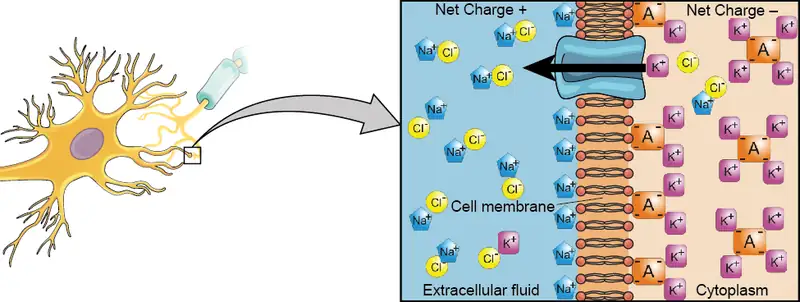
From this resting potential state, the neuron receives a signal and its state changes abruptly (Figure 3.11). When a neuron receives signals at the dendrites—due to neurotransmitters from an adjacent neuron binding to its receptors—small pores, or gates, open on the neuronal membrane, allowing Na+ ions, propelled by both charge and concentration differences, to move into the cell. With this influx of positive ions, the internal charge of the cell becomes more positive. If that charge reaches a certain level, called the threshold of excitation, the neuron becomes active and the action potential begins.
Many additional pores open, causing a massive influx of Na+ ions and a huge positive spike in the membrane potential, the peak action potential. At the peak of the spike, the sodium gates close and the potassium gates open. As positively charged potassium ions leave, the cell quickly begins repolarization. At first, it hyperpolarizes, becoming slightly more negative than the resting potential, and then it levels off, returning to the resting potential.
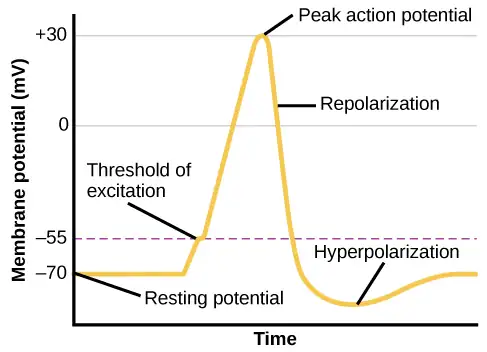
This positive spike constitutes the action potential: the electrical signal that typically moves from the cell body down the axon to the axon terminals. The electrical signal moves down the axon with the impulses jumping in a leapfrog fashion between the Nodes of Ranvier. The Nodes of Ranvier are natural gaps in the myelin sheath. At each point, some of the sodium ions that enter the cell diffuse to the next section of the axon, raising the charge past the threshold of excitation and triggering a new influx of sodium ions. The action potential moves all the way down the axon in this fashion until reaching the terminal buttons.
The action potential is an all-or-none phenomenon. In simple terms, this means that an incoming signal from another neuron is either sufficient or insufficient to reach the threshold of excitation. There is no in-between, and there is no turning off an action potential once it starts. Think of it like sending an email or a text message. You can think about sending it all you want, but the message is not sent until you hit the send button. Furthermore, once you send the message, there is no stopping it.
Because it is all or none, the action potential is recreated, or propagated, at its full strength at every point along the axon. Much like the lit fuse of a firecracker, it does not fade away as it travels down the axon. It is this all-or-none property that explains the fact that your brain perceives an injury to a distant body part like your toe as equally painful as one to your nose.
As noted earlier, when the action potential arrives at the terminal button, the synaptic vesicles release their neurotransmitters into the synaptic cleft. The neurotransmitters travel across the synapse and bind to receptors on the dendrites of the adjacent neuron, and the process repeats itself in the new neuron (assuming the signal is sufficiently strong to trigger an action potential). Once the signal is delivered, excess neurotransmitters in the synaptic cleft drift away, are broken down into inactive fragments, or are reabsorbed in a process known as reuptake. Reuptake involves the neurotransmitter being pumped back into the neuron that released it, in order to clear the synapse (Figure 3.12). Clearing the synapse serves both to provide a clear “on” and “off” state between signals and to regulate the production of neurotransmitter (full synaptic vesicles provide signals that no additional neurotransmitters need to be produced).
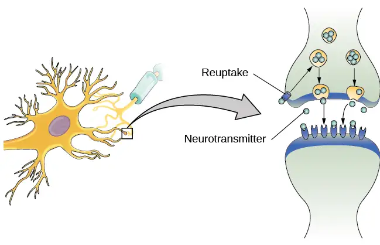
Neuronal communication is often referred to as an electrochemical event. The movement of the action potential down the length of the axon is an electrical event, and movement of the neurotransmitter across the synaptic space represents the chemical portion of the process. However, there are some specialized connections between neurons that are entirely electrical. In such cases, the neurons are said to communicate via an electrical synapse. In these cases, two neurons physically connect to one another via gap junctions, which allows the current from one cell to pass into the next. There are far fewer electrical synapses in the brain, but those that do exist are much faster than the chemical synapses that have been described above (Connors & Long, 2004).
Link to Learning
Watch this video about neuronal communication to learn more.
Neurotransmitters and Drugs¶
There are several different types of neurotransmitters released by different neurons, and we can speak in broad terms about the kinds of functions associated with different neurotransmitters (Table 3.1). Much of what psychologists know about the functions of neurotransmitters comes from research on the effects of drugs in psychological disorders. Psychologists who take a biological perspective and focus on the physiological causes of behavior assert that psychological disorders like depression and schizophrenia are associated with imbalances in one or more neurotransmitter systems. In this perspective, psychotropic medications can help improve the symptoms associated with these disorders. Psychotropic medications are drugs that treat psychiatric symptoms by restoring neurotransmitter balance.
Table 3.1
| Major Neurotransmitters and How They Affect Behavior | ||
|---|---|---|
| Neurotransmitter | Involved in | Potential Effect on Behavior |
| Acetylcholine | Muscle action, memory | Increased arousal, enhanced cognition |
| Beta-endorphin | Pain, pleasure | Decreased anxiety, decreased tension |
| Dopamine | Mood, sleep, learning | Increased pleasure, suppressed appetite |
| Gamma-aminobutyric acid (GABA) | Brain function, sleep | Decreased anxiety, decreased tension |
| Glutamate | Memory, learning | Increased learning, enhanced memory |
| Norepinephrine | Heart, intestines, alertness | Increased arousal, suppressed appetite |
| Serotonin | Mood, sleep | Modulated mood, suppressed appetite |
Psychoactive drugs can act as agonists or antagonists for a given neurotransmitter system. Agonists are chemicals that mimic a neurotransmitter at the receptor site. An antagonist, on the other hand, blocks or impedes the normal activity of a neurotransmitter at the receptor. Agonists and antagonists represent drugs that are prescribed to correct the specific neurotransmitter imbalances underlying a person’s condition. For example, Parkinson's disease, a progressive nervous system disorder, is associated with low levels of dopamine. Therefore, a common treatment strategy for Parkinson's disease involves using dopamine agonists, which mimic the effects of dopamine by binding to dopamine receptors.
Certain symptoms of schizophrenia are associated with overactive dopamine neurotransmission. The antipsychotics used to treat these symptoms are antagonists for dopamine—they block dopamine’s effects by binding its receptors without activating them. Thus, they prevent dopamine released by one neuron from signaling information to adjacent neurons.
In contrast to agonists and antagonists, which both operate by binding to receptor sites, reuptake inhibitors prevent unused neurotransmitters from being transported back to the neuron. This allows neurotransmitters to remain active in the synaptic cleft for longer durations, increasing their effectiveness. Depression, which has been consistently linked with reduced serotonin levels, is commonly treated with selective serotonin reuptake inhibitors (SSRIs). By preventing reuptake, SSRIs strengthen the effect of serotonin, giving it more time to interact with serotonin receptors on dendrites. Common SSRIs on the market today include Prozac, Paxil, and Zoloft. The drug LSD is structurally very similar to serotonin, and it affects the same neurons and receptors as serotonin. Psychotropic drugs are not instant solutions for people suffering from psychological disorders. Often, an individual must take a drug for several weeks before seeing improvement, and many psychoactive drugs have significant negative side effects. Furthermore, individuals vary dramatically in how they respond to the drugs. To improve chances for success, it is not uncommon for people receiving pharmacotherapy to undergo psychological and/or behavioral therapies as well. Some research suggests that combining drug therapy with other forms of therapy tends to be more effective than any one treatment alone (for one such example, see March et al., 2007).
3.3 Parts of the Nervous System¶
Learning Objectives
By the end of this section, you will be able to:
- Describe the difference between the central and peripheral nervous systems
- Explain the difference between the somatic and autonomic nervous systems
- Differentiate between the sympathetic and parasympathetic divisions of the autonomic nervous system
The nervous system can be divided into two major subdivisions: the central nervous system (CNS) and the peripheral nervous system (PNS), shown in Figure 3.13. The CNS is comprised of the brain and spinal cord; the PNS connects the CNS to the rest of the body. In this section, we focus on the peripheral nervous system; later, we look at the brain and spinal cord.
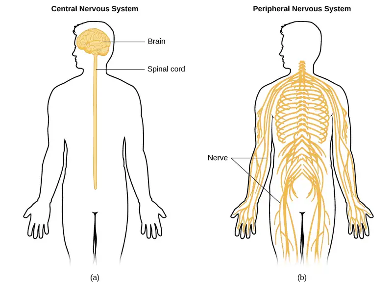
Peripheral Nervous System¶
The peripheral nervous system is made up of thick bundles of axons, called nerves, carrying messages back and forth between the CNS and the muscles, organs, and senses in the periphery of the body (i.e., everything outside the CNS). The PNS has two major subdivisions: the somatic nervous system and the autonomic nervous system.
The somatic nervous system is associated with activities traditionally thought of as conscious or voluntary. It is involved in the relay of sensory and motor information to and from the CNS; therefore, it consists of motor neurons and sensory neurons. Motor neurons, carrying instructions from the CNS to the muscles, are efferent fibers (efferent means “moving away from”). Sensory neurons, carrying sensory information to the CNS, are afferent fibers (afferent means “moving toward”). A helpful way to remember this is that efferent = exit and afferent = arrive. Each nerve is basically a bundle of neurons forming a two-way superhighway, containing thousands of axons, both efferent and afferent.
The autonomic nervous system controls our internal organs and glands and is generally considered to be outside the realm of voluntary control. It can be further subdivided into the sympathetic and parasympathetic divisions (Figure 3.14). The sympathetic nervous system is involved in preparing the body for stress-related activities; the parasympathetic nervous system is associated with returning the body to routine, day-to-day operations. The two systems have complementary functions, operating in tandem to maintain the body’s homeostasis. Homeostasis is a state of equilibrium, or balance, in which biological conditions (such as body temperature) are maintained at optimal levels.
![A diagram of a human body lists the different functions of the sympathetic and parasympathetic nervous system. The parasympathetic system can constrict pupils, stimulate salivation, slow heart rate, constrict bronchi, stimulate digestion, stimulate bile secretion, and cause the bladder to contract. The sympathetic nervous system can dilate pupils, inhibit salivation, increase heart rate, dilate bronchi, inhibit digestion, stimulate the breakdown of glycogen, stimulate secretion of adrenaline and noradrenaline, and inhibit contraction of the bladder.](img/cnx-psych-03-03-autonomic.webp)
The sympathetic nervous system is activated when we are faced with stressful or high-arousal situations. The activity of this system was adaptive for our ancestors, increasing their chances of survival. Imagine, for example, that one of our early ancestors, out hunting small game, suddenly disturbs a large bear with her cubs. At that moment, the hunter's body undergoes a series of changes—a direct function of sympathetic activation—preparing them to face the threat. The pupils dilate, the heart rate and blood pressure increase, the bladder relaxes, and the liver releases glucose; adrenaline surges into the bloodstream. This constellation of physiological changes, known as the fight or flight response, allows the body access to energy reserves and heightened sensory capacity so that it might fight off a threat or run away to safety.
Link to Learning
Watch this video about the Fight Flight Freeze response to learn more.
While it is clear that such a response would be critical for survival for our ancestors, who lived in a world full of real physical threats, many of the high-arousal situations we face in the modern world are more psychological in nature. For example, think about how you feel when you have to stand up and give a presentation in front of a roomful of people, or right before taking a big test. You are in no real physical danger in those situations, and yet you have evolved to respond to a perceived threat with the fight or flight response. This kind of response is not nearly as adaptive in the modern world; in fact, we suffer negative health consequences when faced constantly with psychological threats that we can neither fight nor flee. Recent research suggests that an increase in susceptibility to heart disease (Chandola, Brunner, & Marmot, 2006) and impaired function of the immune system (Glaser & Kiecolt-Glaser, 2005) are among the many negative consequences of persistent and repeated exposure to stressful situations. Some of this tendency for stress reactivity can be wired by early experiences of trauma.
Once the threat has been resolved, the parasympathetic nervous system takes over and returns bodily functions to a relaxed state. Our hunter’s heart rate and blood pressure return to normal, the pupils constrict, bladder control is restored, and the liver begins to store glucose in the form of glycogen for future use. These restorative processes are associated with activation of the parasympathetic nervous system.
3.4 The Brain and Spinal Cord¶
Learning Objectives
By the end of this section, you will be able to:
- Explain the functions of the spinal cord
- Identify the hemispheres and lobes of the brain
- Describe the types of techniques available to clinicians and researchers to image or scan the brain
The brain is a remarkably complex organ comprised of billions of interconnected neurons and glia. It is a bilateral, or two-sided, structure that can be separated into distinct lobes. Each lobe is associated with certain types of functions, but, ultimately, all of the areas of the brain interact with one another to provide the foundation for our thoughts and behaviors. In this section, we discuss the overall organization of the brain and the functions associated with different brain areas, beginning with what can be seen as an extension of the brain, the spinal cord.
The Spinal Cord¶
It can be said that the spinal cord is what connects the brain to the outside world. Because of it, the brain can act. The spinal cord is like a relay station, but a very smart one. It not only routes messages to and from the brain, but it also has its own system of automatic processes, called reflexes.
The top of the spinal cord is a bundle of nerves that merges with the brain stem, where the basic processes of life are controlled, such as breathing and digestion. In the opposite direction, the spinal cord ends just below the ribs—contrary to what we might expect, it does not extend all the way to the base of the spine.
The spinal cord is functionally organized in 30 segments, corresponding with the vertebrae. Each segment is connected to a specific part of the body through the peripheral nervous system. Nerves branch out from the spine at each vertebra. Sensory nerves bring messages in; motor nerves send messages out to the muscles and organs. Messages travel to and from the brain through every segment.
Some sensory messages are immediately acted on by the spinal cord, without any input from the brain. Withdrawal from a hot object and the knee jerk are two examples. When a sensory message meets certain parameters, the spinal cord initiates an automatic reflex. The signal passes from the sensory nerve to a simple processing center, which initiates a motor command. Seconds are saved, because messages don’t have to go to the brain, be processed, and get sent back. In matters of survival, the spinal reflexes allow the body to react extraordinarily fast.
The spinal cord is protected by bony vertebrae and cushioned in cerebrospinal fluid, but injuries still occur. When the spinal cord is damaged in a particular segment, all lower segments are cut off from the brain, causing paralysis. Therefore, the lower on the spine damage occurs, the fewer functions an injured individual will lose.
Neuroplasticity¶
Bob Woodruff, a reporter for ABC, suffered a traumatic brain injury after a bomb exploded next to the vehicle he was in while covering a news story in Iraq. As a consequence of these injuries, Woodruff experienced many cognitive deficits including difficulties with memory and language. However, over time and with the aid of intensive amounts of cognitive and speech therapy, Woodruff has shown an incredible recovery of function (Fernandez, 2008, October 16).
One of the factors that made this recovery possible was neuroplasticity. Neuroplasticity refers to how the nervous system can change and adapt. Neuroplasticity can occur in a variety of ways including personal experiences, developmental processes, or, as in Woodruff's case, in response to some sort of damage or injury that has occurred. Neuroplasticity can involve creation of new synapses, pruning of synapses that are no longer used, changes in glial cells, and even the birth of new neurons. Because of neuroplasticity, our brains are constantly changing and adapting, and while our nervous system is most plastic when we are very young, as Woodruff's case suggests, it is still capable of remarkable changes later in life.
The Two Hemispheres¶
The surface of the brain, known as the cerebral cortex, is very uneven, characterized by a distinctive pattern of folds or bumps, known as gyri (singular: gyrus), and grooves, known as sulci (singular: sulcus), shown in Figure 3.15. These gyri and sulci form important landmarks that allow us to separate the brain into functional centers. The most prominent sulcus, known as the longitudinal fissure, is the deep groove that separates the brain into two halves or hemispheres: the left hemisphere and the right hemisphere.
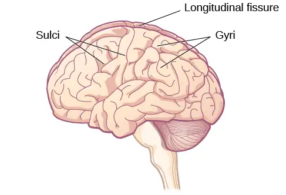
There is evidence of specialization of function—referred to as lateralization—in each hemisphere, mainly regarding differences in language functions. The left hemisphere controls the right half of the body, and the right hemisphere controls the left half of the body. Decades of research on lateralization of function by Michael Gazzaniga and his colleagues suggest that a variety of functions ranging from cause-and-effect reasoning to self-recognition may follow patterns that suggest some degree of hemispheric dominance (Gazzaniga, 2005). For example, the left hemisphere has been shown to be superior for forming associations in memory, selective attention, and positive emotions. The right hemisphere, on the other hand, has been shown to be superior in pitch perception, arousal, and negative emotions (Ehret, 2006). However, it should be pointed out that research on which hemisphere is dominant in a variety of different behaviors has produced inconsistent results, and therefore, it is probably better to think of how the two hemispheres interact to produce a given behavior rather than attributing certain behaviors to one hemisphere versus the other (Banich & Heller, 1998).
The two hemispheres are connected by a thick band of neural fibers known as the corpus callosum, consisting of about 200 million axons. The corpus callosum allows the two hemispheres to communicate with each other and allows for information being processed on one side of the brain to be shared with the other side.
Normally, we are not aware of the different roles that our two hemispheres play in day-to-day functions, but there are people who come to know the capabilities and functions of their two hemispheres quite well. In some cases of severe epilepsy, doctors elect to sever the corpus callosum as a means of controlling the spread of seizures (Figure 3.16). While this is an effective treatment option, it results in individuals who have "split brains." After surgery, these split-brain patients show a variety of interesting behaviors. For instance, a split-brain patient is unable to name a picture that is shown in the patient’s left visual field because the information is only available in the largely nonverbal right hemisphere. However, they are able to recreate the picture with their left hand, which is also controlled by the right hemisphere. When the more verbal left hemisphere sees the picture that the hand drew, the patient is able to name it (assuming the left hemisphere can interpret what was drawn by the left hand).
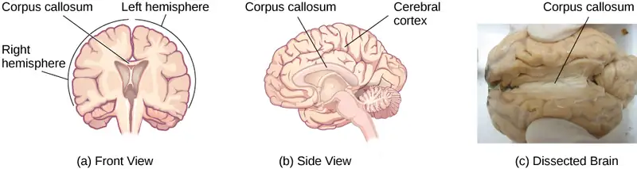
Much of what we know about the functions of different areas of the brain comes from studying changes in the behavior and ability of individuals who have suffered damage to the brain. For example, researchers study the behavioral changes caused by strokes to learn about the functions of specific brain areas. A stroke, caused by an interruption of blood flow to a region in the brain, causes a loss of brain function in the affected region. The damage can be in a small area, and, if it is, this gives researchers the opportunity to link any resulting behavioral changes to a specific area. The types of deficits displayed after a stroke will be largely dependent on where in the brain the damage occurred.
Consider Theona, an intelligent, self-sufficient woman, who is 62 years old. Recently, she suffered a stroke in the front portion of her right hemisphere. As a result, she has great difficulty moving her left leg. (As you learned earlier, the right hemisphere controls the left side of the body; also, the brain’s main motor centers are located at the front of the head, in the frontal lobe.) Theona has also experienced behavioral changes. For example, while in the produce section of the grocery store, she sometimes eats grapes, strawberries, and apples directly from their bins before paying for them. This behavior—which would have been very embarrassing to her before the stroke—is consistent with damage in another region in the frontal lobe—the prefrontal cortex, which is associated with judgment, reasoning, and impulse control.
Forebrain Structures¶
The two hemispheres of the cerebral cortex are part of the forebrain (Figure 3.17), which is the largest part of the brain. The forebrain contains the cerebral cortex and a number of other structures that lie beneath the cortex (called subcortical structures): thalamus, hypothalamus, pituitary gland, and the limbic system (a collection of structures). The cerebral cortex, which is the outer surface of the brain, is associated with higher level processes such as consciousness, thought, emotion, reasoning, language, and memory. Each cerebral hemisphere can be subdivided into four lobes, each associated with different functions.
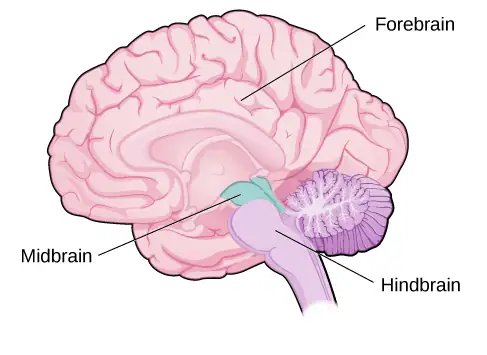
Lobes of the Brain¶
The four lobes of the brain are the frontal, parietal, temporal, and occipital lobes (Figure 3.18). The frontal lobe is located in the forward part of the brain, extending back to a fissure known as the central sulcus. The frontal lobe is involved in reasoning, motor control, emotion, and language. It contains the motor cortex, which is involved in planning and coordinating movement; the prefrontal cortex, which is responsible for higher-level cognitive functioning; and Broca’s area, which is essential for language production.
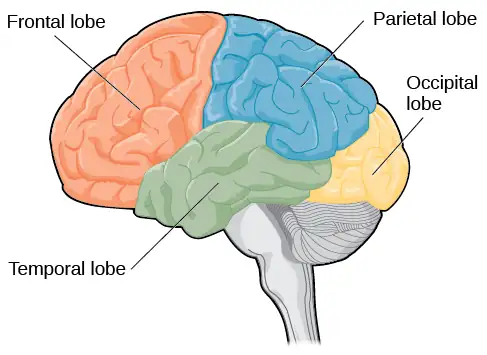
People who suffer damage to Broca’s area have great difficulty producing language of any form (Figure 3.18). For example, Padma was an electrical engineer who was socially active and a caring, involved parent. About twenty years ago, she was in a car accident and suffered damage to her Broca’s area. She completely lost the ability to speak and form any kind of meaningful language. There is nothing wrong with her mouth or her vocal cords, but she is unable to produce words. She can follow directions but can’t respond verbally, and she can read but no longer write. She can do routine tasks like running to the market to buy milk, but she could not communicate verbally if a situation called for it.
Probably the most famous case of frontal lobe damage is that of a man by the name of Phineas Gage. On September 13, 1848, Gage (age 25) was working as a railroad foreman in Vermont. He and his crew were using an iron rod to tamp explosives down into a blasting hole to remove rock along the railway’s path. Unfortunately, the iron rod created a spark and caused the rod to explode out of the blasting hole, into Gage’s face, and through his skull (Figure 3.19). Although lying in a pool of his own blood with brain matter emerging from his head, Gage was conscious and able to get up, walk, and speak. But in the months following his accident, people noticed that his personality had changed. Many of his friends described him as no longer being himself. Before the accident, it was said that Gage was a well-mannered, soft-spoken man, but he began to behave in odd and inappropriate ways after the accident. Such changes in personality would be consistent with loss of impulse control—a frontal lobe function.
Beyond the damage to the frontal lobe itself, subsequent investigations into the rod's path also identified probable damage to pathways between the frontal lobe and other brain structures, including the limbic system. With connections between the planning functions of the frontal lobe and the emotional processes of the limbic system severed, Gage had difficulty controlling his emotional impulses.
However, there is some evidence suggesting that the dramatic changes in Gage’s personality were exaggerated and embellished. Gage's case occurred in the midst of a 19th century debate over localization—regarding whether certain areas of the brain are associated with particular functions. On the basis of extremely limited information about Gage, the extent of his injury, and his life before and after the accident, scientists tended to find support for their own views, on whichever side of the debate they fell (Macmillan, 1999).
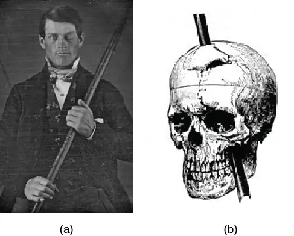
The brain’s parietal lobe is located immediately behind the frontal lobe, and is involved in processing information from the body’s senses. It contains the somatosensory cortex, which is essential for processing sensory information from across the body, such as touch, temperature, and pain. The somatosensory cortex is an area of the brain which processes touch and sensation. The somatosensory cortex is fascinating because each different area of the cortex processes sensations from a different part of your body. Furthermore, the larger the surface area of the specific body part and the greater amount of nerves in that body part, the larger the area dedicated to processing sensation from that body part in the somatosensory cortex. For example, fingers take up a lot more space than toes. As you can notice from (Figure 3.20), the amount of space to process sensation from fingers is much greater than that of toes.
Link to Learning
One fascinating example of neuroplasticity involves reorganization of the somatosensory cortex following limb amputation. Check out this NPR segment about amputees’ experiences of “phantom limbs” following amputation to learn more.
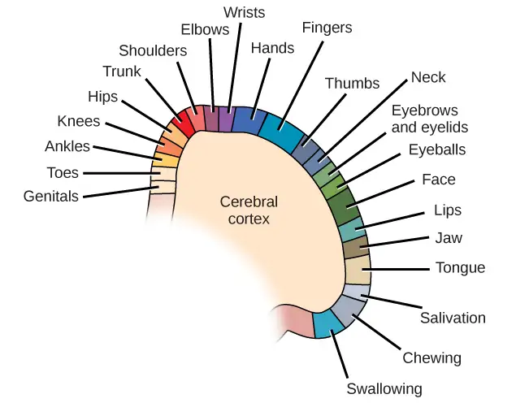
The temporal lobe is located on the side of the head (temporal means “near the temples”), and is associated with hearing, memory, emotion, and some aspects of language. The auditory cortex, the main area responsible for processing auditory information, is located within the temporal lobe. Wernicke’s area, important for speech comprehension, is also located here. Whereas individuals with damage to Broca’s area have difficulty producing language, those with damage to Wernicke’s area can produce sensible language, but they are unable to understand it (Figure 3.21).
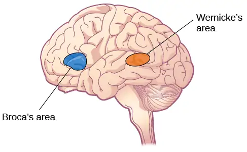
The occipital lobe is located at the very back of the brain, and contains the primary visual cortex, which is responsible for interpreting incoming visual information. The occipital cortex is organized retinotopically, which means there is a close relationship between the position of an object in a person’s visual field and the position of that object’s representation on the cortex. You will learn much more about how visual information is processed in the occipital lobe when you study sensation and perception.
Other Areas of the Forebrain¶
Other areas of the forebrain, located beneath the cerebral cortex, include the thalamus and the limbic system. The thalamus is a sensory relay for the brain. All of our senses, with the exception of smell, are routed through the thalamus before being directed to other areas of the brain for processing (Figure 3.22).
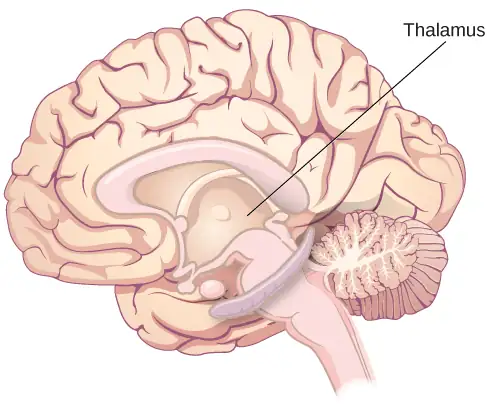
The limbic system is involved in processing both emotion and memory. Interestingly, the sense of smell projects directly to the limbic system; therefore, not surprisingly, smell can evoke emotional responses in ways that other sensory modalities cannot. The limbic system is made up of a number of different structures, but three of the most important are the hippocampus, the amygdala, and the hypothalamus (Figure 3.23). The hippocampus is an essential structure for learning and memory. The amygdala is involved in our experience of emotion and in tying emotional meaning to our memories. The hypothalamus regulates a number of homeostatic processes, including the regulation of body temperature, appetite, and blood pressure. The hypothalamus also serves as an interface between the nervous system and the endocrine system and in the regulation of sexual motivation and behavior.
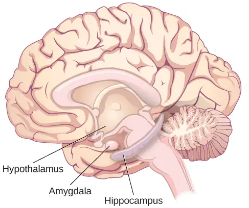
The Case of Henry Molaison (H.M.)¶
In 1953, Henry Gustav Molaison (H. M.) was a 27-year-old man who experienced severe seizures. In an attempt to control his seizures, H. M. underwent brain surgery to remove his hippocampus and amygdala. Following the surgery, H.M’s seizures became much less severe, but he also suffered some unexpected—and devastating—consequences of the surgery: he lost his ability to form many types of new memories. For example, he was unable to learn new facts, such as who was president of the United States. He was able to learn new skills, but afterward he had no recollection of learning them. For example, while he might learn to use a computer, he would have no conscious memory of ever having used one. He could not remember new faces, and he was unable to remember events, even immediately after they occurred. Researchers were fascinated by his experience, and he is considered one of the most studied cases in medical and psychological history (Hardt, Einarsson, & Nader, 2010; Squire, 2009). Indeed, his case has provided tremendous insight into the role that the hippocampus plays in the consolidation of new learning into explicit memory.
Link to Learning
Clive Wearing, an accomplished musician, lost the ability to form new memories when his hippocampus was damaged through illness. Check out the first few minutes of this documentary video about this man and his condition to learn more.
Midbrain and Hindbrain Structures¶
The midbrain is comprised of structures located deep within the brain, between the forebrain and the hindbrain. The reticular formation is centered in the midbrain, but it actually extends up into the forebrain and down into the hindbrain. The reticular formation is important in regulating the sleep/wake cycle, arousal, alertness, and motor activity.
The substantia nigra (Latin for “black substance”) and the ventral tegmental area (VTA) are also located in the midbrain (Figure 3.24). Both regions contain cell bodies that produce the neurotransmitter dopamine, and both are critical for movement. Degeneration of the substantia nigra and VTA is involved in Parkinson’s disease. In addition, these structures are involved in mood, reward, and addiction (Berridge & Robinson, 1998; Gardner, 2011; George, Le Moal, & Koob, 2012).
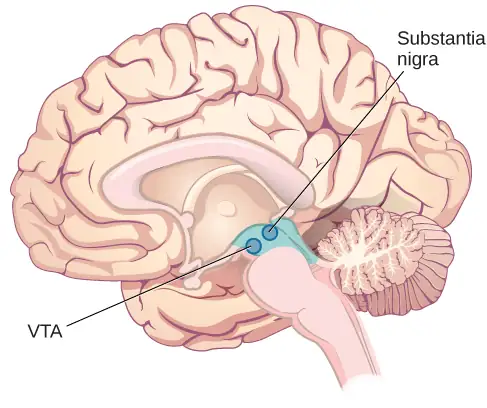
The hindbrain is located at the back of the head and looks like an extension of the spinal cord. It contains the medulla, pons, and cerebellum (Figure 3.25). The medulla controls the automatic processes of the autonomic nervous system, such as breathing, blood pressure, and heart rate. The word pons literally means “bridge,” and as the name suggests, the pons serves to connect the hindbrain to the rest of the brain. It also is involved in regulating brain activity during sleep. The medulla, pons, and various structures are known as the brainstem, and aspects of the brainstem span both the midbrain and the hindbrain.
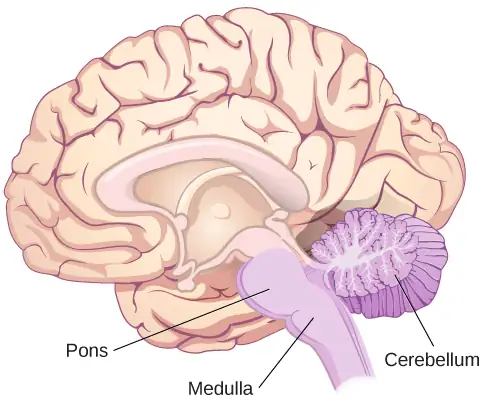
The cerebellum (Latin for “little brain”) receives messages from muscles, tendons, joints, and structures in our ear to control balance, coordination, movement, and motor skills. The cerebellum is also thought to be an important area for processing some types of memories. In particular, procedural memory, or memory involved in learning and remembering how to perform tasks, is thought to be associated with the cerebellum. Recall that H. M. was unable to form new explicit memories, but he could learn new tasks. This is likely due to the fact that H. M.’s cerebellum remained intact.
What Do You Think?: Brain Dead and on Life Support
What would you do if your spouse or loved one was declared brain dead but their body was being kept alive by medical equipment? What if the loved one was in a persistent vegetative state and remained unconscious but maintained basic functions like breathing? Whose decision should it be to remove a feeding tube? Should medical care costs be a factor?
On February 25, 1990, a Florida woman named Terri Schiavo went into cardiac arrest, apparently triggered by a bulimic episode. She was eventually revived, but her brain had been deprived of oxygen for a long time. Brain scans indicated that there was no activity in her cerebral cortex, and she suffered from severe and permanent cerebral atrophy. Basically, Schiavo was in a vegetative state. Medical professionals determined that she would never again be able to move, talk, or respond in any way. To remain alive, she required a feeding tube, and there was no chance that her situation would ever improve.
On occasion, Schiavo’s eyes would move, and sometimes she would groan. Despite the doctors’ insistence to the contrary, her parents believed that these were signs that she was trying to communicate with them.
After 12 years, Schiavo’s husband argued that his wife would not have wanted to be kept alive with no feelings, sensations, or brain activity. Her parents, however, were very much against removing her feeding tube. Eventually, the case made its way to the courts, both in the state of Florida and at the federal level. By 2005, the courts found in favor of Schiavo’s husband, and the feeding tube was removed on March 18, 2005. Schiavo died 13 days later.
Why did Schiavo’s eyes sometimes move, and why did she groan? Although the parts of her brain that control thought, voluntary movement, and feeling were completely damaged, her brainstem was still intact. Her medulla and pons maintained her breathing and caused involuntary movements of her eyes and the occasional groans. Over the 15-year period that she was on a feeding tube, Schiavo’s medical costs may have topped $7 million (Arnst, 2003).
These questions were brought to popular consciousness decades ago in the case of Terri Schiavo, and they have persisted. In 2013, a 13-year-old girl who suffered complications after tonsil surgery was declared brain dead. There was a battle between her family, who wanted her to remain on life support, and the hospital’s policies regarding persons declared brain dead. In another complicated 2013–14 case in Texas, a pregnant EMT professional declared brain dead was kept alive for weeks, despite her spouse’s directives, which were based on her wishes should this situation arise. In this case, state laws designed to protect an unborn fetus came into consideration until doctors determined the fetus unviable.
Decisions surrounding the medical response to patients declared brain dead are complex. Whether a person is declared brain dead or diagnosed as having a persistent vegetative state, determining death and making appropriate medical care decisions is a complicated process. What do you think about these issues?
Brain Imaging¶
You have learned how brain injury can provide information about the functions of different parts of the brain. Increasingly, however, we are able to obtain that information using brain imaging techniques on individuals who have not suffered brain injury. In this section, we take a more in-depth look at some of the techniques that are available for imaging the brain, including techniques that rely on radiation, magnetic fields, or electrical activity within the brain.
Techniques Involving Radiation¶
A computerized tomography (CT) scan involves taking a number of x-rays of a particular section of a person’s body or brain (Figure 3.26). The x-rays pass through tissues of different densities at different rates, allowing a computer to construct an overall image of the area of the body being scanned. A CT scan is often used to determine whether someone has a tumor or significant brain atrophy.
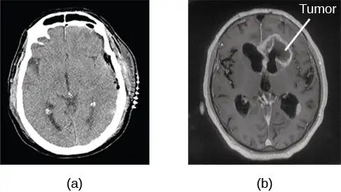
Positron emission tomography (PET) scans create pictures of the living, active brain (Figure 3.27). An individual receiving a PET scan drinks or is injected with a mildly radioactive substance, called a tracer. Once in the bloodstream, the amount of tracer in any given region of the brain can be monitored. As a brain area becomes more active, more blood flows to that area. A computer monitors the movement of the tracer and creates a rough map of active and inactive areas of the brain during a given behavior. PET scans show little detail, are unable to pinpoint events precisely in time, and require that the brain be exposed to radiation; therefore, this technique has been replaced by the fMRI as an alternative diagnostic tool. However, combined with CT, PET technology is still being used in certain contexts. For example, CT/PET scans allow better imaging of the activity of neurotransmitter receptors and open new avenues in schizophrenia research. In this hybrid CT/PET technology, CT contributes clear images of brain structures, while PET shows the brain’s activity.
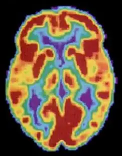
Techniques Involving Magnetic Fields¶
In magnetic resonance imaging (MRI), a person is placed inside a machine that generates a strong magnetic field. The magnetic field causes the hydrogen atoms in the body’s cells to move. When the magnetic field is turned off, the hydrogen atoms emit electromagnetic signals as they return to their original positions. Tissues of different densities give off different signals, which a computer interprets and displays on a monitor. Functional magnetic resonance imaging (fMRI) operates on the same principles, but it shows changes in brain activity over time by tracking blood flow and oxygen levels. The fMRI provides more detailed images of the brain’s structure, as well as better accuracy in time, than is possible in PET scans (Figure 3.28). With their high level of detail, MRI and fMRI are often used to compare the brains of healthy individuals to the brains of individuals diagnosed with psychological disorders. This comparison helps determine what structural and functional differences exist between these populations.
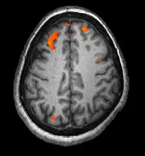
Link to Learning
Visit this virtual lab about MRI and fMRI to learn more.
Techniques Involving Electrical Activity¶
In some situations, it is helpful to gain an understanding of the overall activity of a person’s brain, without needing information on the actual location of the activity. Electroencephalography (EEG) serves this purpose by providing a measure of a brain’s electrical activity. An array of electrodes is placed around a person’s head (Figure 3.29). The signals received by the electrodes result in a printout of the electrical activity of their brain, or brainwaves, showing both the frequency (number of waves per second) and amplitude (height) of the recorded brainwaves, with an accuracy within milliseconds. Such information is especially helpful to researchers studying sleep patterns among individuals with sleep disorders.
3.5 The Endocrine System¶
Learning Objectives
By the end of this section, you will be able to:
- Identify the major glands of the endocrine system
- Identify the hormones secreted by each gland
- Describe each hormone’s role in regulating bodily functions
The endocrine system consists of a series of glands that produce chemical substances known as hormones (Figure 3.30). Like neurotransmitters, hormones are chemical messengers that must bind to a receptor in order to send their signal. However, unlike neurotransmitters, which are released in close proximity to cells with their receptors, hormones are secreted into the bloodstream and travel throughout the body, affecting any cells that contain receptors for them. Thus, whereas neurotransmitters’ effects are localized, the effects of hormones are widespread. Also, hormones are slower to take effect, and tend to be longer lasting.
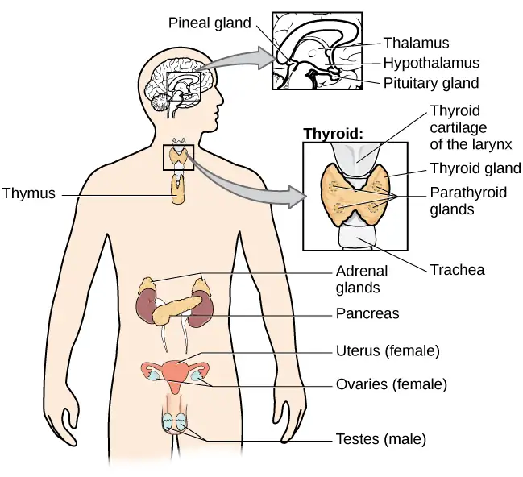
Hormones are involved in regulating all sorts of bodily functions, and they are ultimately controlled through interactions between the hypothalamus (in the central nervous system) and the pituitary gland (in the endocrine system). Imbalances in hormones are related to a number of disorders. This section explores some of the major glands that make up the endocrine system and the hormones secreted by these glands (Table 3.2).
Major Glands¶
The pituitary gland descends from the hypothalamus at the base of the brain, and acts in close association with it. The pituitary is often referred to as the “master gland” because its messenger hormones control all the other glands in the endocrine system, although it mostly carries out instructions from the hypothalamus. In addition to messenger hormones, the pituitary also secretes growth hormone, endorphins for pain relief, and a number of key hormones that regulate fluid levels in the body.
Located in the neck, the thyroid gland releases hormones that regulate growth, metabolism, and appetite. In hyperthyroidism, the thyroid secretes too much of the hormone thyroxine, causing agitation, bulging eyes, and weight loss. One cause of hyperthyroidism is Graves' disease, an autoimmune disease in which one’s own body attacks itself. In hypothyroidism, reduced hormone levels cause sufferers to experience tiredness, and they often complain of feeling cold. Fortunately, thyroid disorders are often treatable with medications that help reestablish a balance in the hormones secreted by the thyroid.
The adrenal glands sit atop our kidneys and secrete hormones involved in the stress response, such as epinephrine (adrenaline) and norepinephrine (noradrenaline). The pancreas is an internal organ that secretes hormones that regulate blood sugar levels: insulin and glucagon. These pancreatic hormones are essential for maintaining stable levels of blood sugar throughout the day by lowering blood glucose levels (insulin) or raising them (glucagon). People who suffer from diabetes do not produce enough insulin; therefore, they must take medications that stimulate or replace insulin production, and they must closely control the amount of sugars and carbohydrates they consume.
The gonads secrete sexual hormones, which are important in reproduction, and mediate both sexual motivation and behavior. The female gonads are the ovaries; the male gonads are the testes. Ovaries secrete estrogens and progesterone, and the testes secrete androgens, such as testosterone.
Table 3.2
| Major Endocrine Glands and Associated Hormone Functions | ||
|---|---|---|
| Endocrine Gland | Associated Hormones | Function |
| Pituitary | Growth hormone, releasing and inhibiting hormones (such as thyroid stimulating hormone) | Regulate growth, regulate hormone release |
| Thyroid | Thyroxine, triiodothyronine | Regulate metabolism and appetite |
| Pineal | Melatonin | Regulate some biological rhythms such as sleep cycles |
| Adrenal | Epinephrine, norepinephrine | Stress response, increase metabolic activities |
| Pancreas | Insulin, glucagon | Regulate blood sugar levels |
| Ovaries | Estrogen, progesterone | Mediate sexual motivation and behavior, reproduction |
| Testes | Androgens, such as testosterone | Mediate sexual motivation and behavior, reproduction |
Dig Deeper: Athletes and Anabolic Steroids
Although it is against Federal laws and many professional athletic associations (The National Football League, for example) have banned their use, anabolic steroid drugs continue to be used by amateur and professional athletes. The drugs are believed to enhance athletic performance. Anabolic steroid drugs mimic the effects of the body’s own steroid hormones, like testosterone and its derivatives. These drugs have the potential to provide a competitive edge by increasing muscle mass, strength, and endurance, although not all users may experience these results. Moreover, use of performance-enhancing drugs (PEDs) does not come without risks. Anabolic steroid use has been linked with a wide variety of potentially negative outcomes, ranging in severity from largely cosmetic (acne) to life threatening (heart attack). Furthermore, use of these substances can result in profound changes in mood and can increase aggressive behavior (National Institute on Drug Abuse, 2001).
Baseball player Alex Rodriguez (A-Rod) spent the latter part of his playing career at the center of a media storm regarding his use of illegal PEDs. Rodriguez excelled while using the drugs; his success played a large role in negotiating a contract that made him the highest paid player in professional baseball. A subsequent scandal and suspension tarnished his reputation and, according to a statement he made once retired, cost him over $40 million. Even lower-profile athletes, particularly in cycling and Olympic sports, have been revealed as steroid users. What are your thoughts on athletes and doping? Why should the use of PEDs be banned or not banned? What advice would you give an athlete who was considering using PEDs?
Chapter Review¶
Key Terms¶
- action potential
- electrical signal that moves down the neuron’s axon
- adrenal gland
- sits atop our kidneys and secretes hormones involved in the stress response
- agonist
- drug that mimics or strengthens the effects of a neurotransmitter
- all-or-none
- phenomenon that incoming signal from another neuron is either sufficient or insufficient to reach the threshold of excitation
- allele
- specific version of a gene
- amygdala
- structure in the limbic system involved in our experience of emotion and tying emotional meaning to our memories
- antagonist
- drug that blocks or impedes the normal activity of a given neurotransmitter
- auditory cortex
- strip of cortex in the temporal lobe that is responsible for processing auditory information
- autonomic nervous system
- controls our internal organs and glands
- axon
- major extension of the soma
- biological perspective
- view that psychological disorders like depression and schizophrenia are associated with imbalances in one or more neurotransmitter systems
- Broca’s area
- region in the left hemisphere that is essential for language production
- central nervous system (CNS)
- brain and spinal cord
- cerebellum
- hindbrain structure that controls our balance, coordination, movement, and motor skills, and it is thought to be important in processing some types of memory
- cerebral cortex
- surface of the brain that is associated with our highest mental capabilities
- chromosome
- long strand of genetic information
- computerized tomography (CT) scan
- imaging technique in which a computer coordinates and integrates multiple x-rays of a given area
- corpus callosum
- thick band of neural fibers connecting the brain’s two hemispheres
- dendrite
- branch-like extension of the soma that receives incoming signals from other neurons
- deoxyribonucleic acid (DNA)
- helix-shaped molecule made of nucleotide base pairs
- diabetes
- disease related to insufficient insulin production
- dominant allele
- allele whose phenotype will be expressed in an individual that possesses that allele
- electroencephalography (EEG)
- recording the electrical activity of the brain via electrodes on the scalp
- endocrine system
- series of glands that produce chemical substances known as hormones
- epigenetics
- study of gene-environment interactions, such as how the same genotype leads to different phenotypes
- fight or flight response
- activation of the sympathetic division of the autonomic nervous system, allowing access to energy reserves and heightened sensory capacity so that we might fight off a given threat or run away to safety
- forebrain
- largest part of the brain, containing the cerebral cortex, the thalamus, and the limbic system, among other structures
- fraternal twins
- twins who develop from two different eggs fertilized by different sperm, so their genetic material varies the same as in non-twin siblings
- frontal lobe
- part of the cerebral cortex involved in reasoning, motor control, emotion, and language; contains motor cortex
- functional magnetic resonance imaging (fMRI)
- MRI that shows changes in metabolic activity over time
- gene
- sequence of DNA that controls or partially controls physical characteristics
- genetic environmental correlation
- view of gene-environment interaction that asserts our genes affect our environment, and our environment influences the expression of our genes
- genotype
- genetic makeup of an individual
- glial cell
- nervous system cell that provides physical and metabolic support to neurons, including neuronal insulation and communication, and nutrient and waste transport
- gonad
- secretes sexual hormones, which are important for successful reproduction, and mediate both sexual motivation and behavior
- gyrus
- (plural: gyri) bump or ridge on the cerebral cortex
- hemisphere
- left or right half of the brain
- heterozygous
- consisting of two different alleles
- hindbrain
- division of the brain containing the medulla, pons, and cerebellum
- hippocampus
- structure in the temporal lobe associated with learning and memory
- homeostasis
- state of equilibrium—biological conditions, such as body temperature, are maintained at optimal levels
- homozygous
- consisting of two identical alleles
- hormone
- chemical messenger released by endocrine glands
- hypothalamus
- forebrain structure that regulates sexual motivation and behavior and a number of homeostatic processes; serves as an interface between the nervous system and the endocrine system
- identical twins
- twins that develop from the same sperm and egg
- lateralization
- concept that each hemisphere of the brain is associated with specialized functions
- limbic system
- collection of structures involved in processing emotion and memory
- longitudinal fissure
- deep groove in the brain’s cortex
- magnetic resonance imaging (MRI)
- magnetic fields used to produce a picture of the tissue being imaged
- medulla
- hindbrain structure that controls automated processes like breathing, blood pressure, and heart rate
- membrane potential
- difference in charge across the neuronal membrane
- midbrain
- division of the brain located between the forebrain and the hindbrain; contains the reticular formation
- motor cortex
- strip of cortex involved in planning and coordinating movement
- mutation
- sudden, permanent change in a gene
- myelin sheath
- fatty substance that insulates axons
- nervous system
- made up of billions of neurons and controls our thoughts, responses, and movements; divided into the central nervous system (CNS) and the peripheral nervous system (PNS)
- neuron
- cells in the nervous system that act as interconnected information processors, which are essential for all of the tasks of the nervous system
- neuroplasticity
- nervous system's ability to change
- neurotransmitter
- chemical messenger of the nervous system
- Nodes of Ranvier
- open spaces that are found in the myelin sheath that encases the axon
- occipital lobe
- part of the cerebral cortex associated with visual processing; contains the primary visual cortex
- pancreas
- secretes hormones that regulate blood sugar
- parasympathetic nervous system
- associated with routine, day-to-day operations of the body
- parietal lobe
- part of the cerebral cortex involved in processing various sensory and perceptual information; contains the primary somatosensory cortex
- peripheral nervous system (PNS)
- connects the brain and spinal cord to the muscles, organs and senses in the periphery of the body
- phenotype
- individual’s inheritable physical characteristics
- pituitary gland
- secretes a number of key hormones, which regulate fluid levels in the body, and a number of messenger hormones, which direct the activity of other glands in the endocrine system
- polygenic
- multiple genes affecting a given trait
- pons
- hindbrain structure that connects the brain and spinal cord; involved in regulating brain activity during sleep
- positron emission tomography (PET) scan
- involves injecting individuals with a mildly radioactive substance and monitoring changes in blood flow to different regions of the brain
- prefrontal cortex
- area in the frontal lobe responsible for higher-level cognitive functioning
- psychotropic medication
- drugs that treat psychiatric symptoms by restoring neurotransmitter balance
- range of reaction
- asserts our genes set the boundaries within which we can operate, and our environment interacts with the genes to determine where in that range we will fall
- receptor
- protein on the cell surface where neurotransmitters attach
- recessive allele
- allele whose phenotype will be expressed only if an individual is homozygous for that allele
- resting potential
- the state of readiness of a neuron membrane’s potential between signals
- reticular formation
- midbrain structure important in regulating the sleep/wake cycle, arousal, alertness, and motor activity
- reuptake
- neurotransmitter is pumped back into the neuron that released it
- semipermeable membrane
- cell membrane that allows smaller molecules or molecules without an electrical charge to pass through it, while stopping larger or highly charged molecules
- soma
- cell body
- somatic nervous system
- relays sensory and motor information to and from the CNS
- somatosensory cortex
- essential for processing sensory information from across the body, such as touch, temperature, and pain
- substantia nigra
- midbrain structure where dopamine is produced; involved in control of movement
- sulcus
- (plural: sulci) depressions or grooves in the cerebral cortex
- sympathetic nervous system
- involved in stress-related activities and functions
- synaptic cleft
- small gap between two neurons where communication occurs
- synaptic vesicle
- storage site for neurotransmitters
- temporal lobe
- part of cerebral cortex associated with hearing, memory, emotion, and some aspects of language; contains primary auditory cortex
- terminal button
- axon terminal containing synaptic vesicles
- thalamus
- sensory relay for the brain
- theory of evolution by natural selection
- states that organisms that are better suited for their environments will survive and reproduce compared to those that are poorly suited for their environments
- threshold of excitation
- level of charge in the membrane that causes the neuron to become active
- thyroid
- secretes hormones that regulate growth, metabolism, and appetite
- ventral tegmental area (VTA)
- midbrain structure where dopamine is produced: associated with mood, reward, and addiction
- Wernicke’s area
- important for speech comprehension
Summary¶
3.1 Human Genetics¶
Genes are sequences of DNA that code for a particular trait. Different versions of a gene are called alleles—sometimes alleles can be classified as dominant or recessive. A dominant allele always results in the dominant phenotype. In order to exhibit a recessive phenotype, an individual must be homozygous for the recessive allele. Genes affect both physical and psychological characteristics. Ultimately, how and when a gene is expressed, and what the outcome will be—in terms of both physical and psychological characteristics—is a function of the interaction between our genes and our environments.
3.2 Cells of the Nervous System¶
Glia and neurons are the two cell types that make up the nervous system. While glia generally play supporting roles, the communication between neurons is fundamental to all of the functions associated with the nervous system. Neuronal communication is made possible by the neuron’s specialized structures. The soma contains the cell nucleus, and the dendrites extend from the soma in tree-like branches. The axon is another major extension of the cell body; axons are often covered by a myelin sheath, which increases the speed of transmission of neural impulses. At the end of the axon are terminal buttons that contain synaptic vesicles filled with neurotransmitters.
Neuronal communication is an electrochemical event. The dendrites contain receptors for neurotransmitters released by nearby neurons. If the signals received from other neurons are sufficiently strong, an action potential will travel down the length of the axon to the terminal buttons, resulting in the release of neurotransmitters into the synaptic cleft. Action potentials operate on the all-or-none principle and involve the movement of Na+ and K+ across the neuronal membrane.
Different neurotransmitters are associated with different functions. Often, psychological disorders involve imbalances in a given neurotransmitter system. Therefore, psychotropic drugs are prescribed in an attempt to bring the neurotransmitters back into balance. Drugs can act either as agonists or as antagonists for a given neurotransmitter system.
3.3 Parts of the Nervous System¶
The brain and spinal cord make up the central nervous system. The peripheral nervous system is comprised of the somatic and autonomic nervous systems. The somatic nervous system transmits sensory and motor signals to and from the central nervous system. The autonomic nervous system controls the function of our organs and glands, and can be divided into the sympathetic and parasympathetic divisions. Sympathetic activation prepares us for fight or flight, while parasympathetic activation is associated with normal functioning under relaxed conditions.
3.4 The Brain and Spinal Cord¶
The brain consists of two hemispheres, each controlling the opposite side of the body. Each hemisphere can be subdivided into different lobes: frontal, parietal, temporal, and occipital. In addition to the lobes of the cerebral cortex, the forebrain includes the thalamus (sensory relay) and limbic system (emotion and memory circuit). The midbrain contains the reticular formation, which is important for sleep and arousal, as well as the substantia nigra and ventral tegmental area. These structures are important for movement, reward, and addictive processes. The hindbrain contains the structures of the brainstem (medulla, pons, and midbrain), which control automatic functions like breathing and blood pressure. The hindbrain also contains the cerebellum, which helps coordinate movement and certain types of memories.
Individuals with brain damage have been studied extensively to provide information about the role of different areas of the brain, and recent advances in technology allow us to glean similar information by imaging brain structure and function. These techniques include CT, PET, MRI, fMRI, and EEG.
3.5 The Endocrine System¶
The glands of the endocrine system secrete hormones to regulate normal body functions. The hypothalamus serves as the interface between the nervous system and the endocrine system, and it controls the secretions of the pituitary. The pituitary serves as the master gland, controlling the secretions of all other glands. The thyroid secretes thyroxine, which is important for basic metabolic processes and growth; the adrenal glands secrete hormones involved in the stress response; the pancreas secretes hormones that regulate blood sugar levels; and the ovaries and testes produce sex hormones that regulate sexual motivation and behavior.
References¶
References
Anderson, P. J., & Leuzzi, V. (2010). White matter pathology in phenylketonuria. Molecular Genetics and Metabolism, 99, S3–S9.
Arnst, C. (2003, November). Commentary: Getting rational about health-care rationing. Bloomberg Businessweek Magazine. http://www.businessweek.com/stories/2003-11-16/commentary-getting-rational-about-health-care-rationing
Azevedo, F. A., Carvalho, L. R., Grinberg, L. T., Farfel, J. M., Ferretti, R. E., Leite, R. E., ... & Herculano‐Houzel, S. (2009). Equal numbers of neuronal and nonneuronal cells make the human brain an isometrically scaled‐up primate brain. Journal of Comparative Neurology, 513(5), 532–541.
Banich, M. T., & Heller, W. (1998). Evolving perspectives on lateralization of function. Current Directions in Psychological Science, 7(1), 1–2.
Berridge, K. C., & Robinson, T. E. (1998). What is the role of dopamine in reward: Hedonic impact, reward learning, or incentive salience? Brain Research Reviews, 28, 309–369.
Chandola, T., Brunner, E., & Marmot, M. (2006). Chronic stress at work and the metabolic syndrome: A prospective study. BMJ, 332, 521–524.
Comings, D. E., Gonzales, N., Saucier, G., Johnson, J. P., & MacMurray, J. P. (2000). The DRD4 gene and the spiritual transcendence scale of the character temperament index. Psychiatric Genetics, 10, 185–189.
Confer, J. C., Easton, J. A., Fleischman, D. S., Goetz, C. D., Lewis, D. M. G, Perilloux, C., & Buss, D. M. (2010). Evolutionary psychology: Controversies, questions, prospects, and limitations. American Psychologist, 65, 110–126.
Connors, B. W., & Long, M. A. (2004). Electrical synapses in the mammalian brain. Annual Review of Neuroscience, 27, 393–418.
Ehret, G. (2006). Hemisphere dominance of brain function—which functions are lateralized and why?. 23 Problems in Systems Neuroscience, 44–61.
Fernandez, A. (2008, October 16). ABC reporter Bob Woodruff's incredible recovery from traumatic brain injury. The Huffington Post. https://www.huffpost.com/entry/abc-reporter-bob-woodruff_b_125863
Gaines, C. (2013, August). An A-Rod suspension would save the Yankees as much as $37.5 million in 2014 alone. Business Insider. http://www.businessinsider.com/an-a-rod-suspension-would-save-the-yankees-as-much-as-375-million-in-2014-2013-8
Gardner, E. L. (2011). Addiction and brain reward and antireward pathways. Advances in Psychosomatic Medicine, 30, 22–60.
Gazzaniga, M. S. (2005). Forty-five years of split-brain research and still going strong. Nature Reviews Neuroscience, 6(8), 653–659.
George, O., Le Moal, M., & Koob, G. F. (2012). Allostasis and addiction: Role of the dopamine and corticotropin-releasing factor systems. Physiology & Behavior, 106, 58–64.
Glaser, R., & Kiecolt-Glaser, J. K. (2005). Stress-induced immune dysfunction: Implications for health. Nature Reviews Immunology, 5, 243–251.
Gong, L., Parikh, S., Rosenthal, P. J., & Greenhouse, B. (2013). Biochemical and immunological mechanisms by which sickle cell trait protects against malaria. Malaria Journal. Advance online publication. doi:10.1186/1475-2875-12-317
Hardt, O., Einarsson, E. Ö., & Nader, K. (2010). A bridge over troubled water: Reconsolidation as a link between cognitive and neuroscientific memory research traditions. Annual Review of Psychology, 61, 141–167.
Herculano-Houzel, S. (2009). The human brain in numbers: a linearly scaled-up primate brain. Frontiers in Human Neuroscience, 3, 31.
Herculano-Houzel, S. (2012). The remarkable, yet not extraordinary, human brain as a scaled-up primate brain and its associated cost. Proceedings of the National Academy of Sciences, 109(Supplement 1), 10661–10668.
Huttenlocher, P. R. (2000). The neuropathology of phenylketonuria: human and animal studies. European Journal of Pediatrics, 159(2), S102–S106.
Macmillan, M. (1999). The Phineas Gage Information Page. http://www.uakron.edu/gage
March, J. S., Silva, S., Petrycki, S., Curry, J., Wells, K., Fairbank, J., … Severe, J. (2007). The treatment for adolescents with depression study (TADS): Long-term effectiveness and safety outcomes. Arch Gen Psychiatry, 64, 1132–1143.
Miguel, P. M., Pereira, L. O., Silveira, P. P., & Meaney, M. J. (2019). Early environmental influences on the development of children's brain structure and function. Developmental Medicine and Child Neurology, 61, 1127–33.
Mustanski, B. S., DuPree, M. G., Nievergelt, C. M., Bocklandt, S., Schork, N. J., & Hamer, D. H. (2005). A genome wide scan of male sexual orientation. Human Genetics, 116, 272–278.
National Institute on Drug Abuse. (2001, July). Anabolic steroid abuse: What are the health consequences of steroid abuse? National Institutes of Health. http://www.drugabuse.gov/publications/research-reports/anabolic-steroid-abuse/what-are-health-consequences-steroid-abuse
Short, A. K., and Baram, T. Z. (2019). Early-life adversity and neurological disease: Age-old questions and novel answers. Nature Reviews Neurology, 15, 657–69.
Squire, L. R. (2009). The legacy of patient H. M. for neuroscience. Neuron, 61, 6–9.
Tienari, P., Wynne, L. C., Sorri, A., et al. (2004). Genotype–environment interaction in schizophrenia spectrum disorder: long-term follow-up study of Finnish adoptees. British Journal of Psychiatry, 184, 216–222.
University of Utah Genetic Science Learning Center. (n.d.). What are genetic disorders? http://learn.genetics.utah.edu/content/disorders/whataregd/
Yudell, M., Roberts, D., DeSalle, R., & Tishkoff, S. (2016). Taking race out of human genetics. Science, 351(6273), 564–565.
Review Questions¶
3.1 Human Genetics¶
1. A(n) ________ is a sudden, permanent change in a sequence of DNA.
- allele
- chromosome
- epigenetic
- mutation
Answer
D
2. ________ refers to a person’s genetic makeup, while ________ refers to a person’s physical characteristics.
- Phenotype; genotype
- Genotype; phenotype
- DNA; gene
- Gene; DNA
Answer
B
3. ________ is the field of study that focuses on genes and their expression.
- Social psychology
- Evolutionary psychology
- Epigenetics
- Behavioral neuroscience
Answer
C
4. Humans have ________ pairs of chromosomes.
- 15
- 23
- 46
- 78
Answer
B
3.2 Cells of the Nervous System¶
5. The ________ receive(s) incoming signals from other neurons.
- soma
- terminal buttons
- myelin sheath
- dendrites
Answer
D
6. A(n) ________ facilitates or mimics the activity of a given neurotransmitter system.
- axon
- SSRI
- agonist
- antagonist
Answer
C
7. Multiple sclerosis involves a breakdown of the ________.
- soma
- myelin sheath
- synaptic vesicles
- dendrites
Answer
B
8. An action potential involves Na+ moving ________ the cell and K+ moving ________ the cell.
- inside; outside
- outside; inside
- inside; inside
- outside; outside
Answer
A
3.3 Parts of the Nervous System¶
9. Our ability to make our legs move as we walk across the room is controlled by the ________ nervous system.
- autonomic
- somatic
- sympathetic
- parasympathetic
Answer
B
10. If your ________ is activated, you will feel relatively at ease.
- somatic nervous system
- sympathetic nervous system
- parasympathetic nervous system
- spinal cord
Answer
C
11. The central nervous system is comprised of ________.
- sympathetic and parasympathetic nervous systems
- organs and glands
- somatic and autonomic nervous systems
- brain and spinal cord
Answer
D
12. Sympathetic activation is associated with ________.
- pupil dilation
- storage of glucose in the liver
- increased heart rate
- both A and C
Answer
D
3.4 The Brain and Spinal Cord¶
13. The ________ is a sensory relay station where all sensory information, except for smell, goes before being sent to other areas of the brain for further processing.
- amygdala
- hippocampus
- hypothalamus
- thalamus
Answer
D
14. Damage to the ________ disrupts one’s ability to comprehend language, but it leaves one’s ability to produce words intact.
- amygdala
- Broca’s Area
- Wernicke’s Area
- occipital lobe
Answer
C
15. A(n) ________ uses magnetic fields to create pictures of a given tissue.
- EEG
- MRI
- PET scan
- CT scan
Answer
B
16. Which of the following is not a structure of the forebrain?
- thalamus
- hippocampus
- amygdala
- substantia nigra
Answer
D
3.5 The Endocrine System¶
17. The two major hormones secreted from the pancreas are:
- estrogen and progesterone
- norepinephrine and epinephrine
- thyroxine and oxytocin
- glucagon and insulin
Answer
D
18. The ________ secretes messenger hormones that direct the function of the rest of the endocrine glands.
- ovary
- thyroid
- pituitary
- pancreas
Answer
C
19. The ________ gland secretes epinephrine.
- adrenal
- thyroid
- pituitary
- master
Answer
A
20. The ________ secretes hormones that regulate the body’s fluid levels.
- adrenal
- pituitary
- testes
- thyroid
Answer
B
Critical Thinking Questions¶
3.1 Human Genetics¶
21. The theory of evolution by natural selection requires variability of a given trait. Why is variability necessary and where does it come from?
Answer
Variability is essential for natural selection to work. If all individuals are the same on a given trait, there will be no relative difference in their reproductive success because everyone will be equally adapted to their environments on that trait. Mutations are one source of variability, but sexual reproduction is another important source of variation given that individuals inherit half of their genetic makeup from each of their parents.
3.2 Cells of the Nervous System¶
22. Cocaine has two effects on synaptic transmission: it impairs reuptake of dopamine and it causes more dopamine to be released into the synaptic cleft. Would cocaine be classified as an agonist or antagonist? Why?
Answer
As a reuptake inhibitor, cocaine blocks the normal activity of dopamine at the receptor. The function causing more dopamine to be released into the synapse is agonist because it mimics and strengthens the effect of the neurotransmitter. Cocaine would be considered an agonist because by preventing the enzymatic degradation of the neurotransmitters, it increases the potential time that these neurotransmitters might be active in the synapse.
23. Drugs such as lidocaine and novocaine act as Na+ channel blockers. In other words, they prevent sodium from moving across the neuronal membrane. Why would this particular effect make these drugs such effective local anesthetics?
Answer
The action potential is initiated by an influx of Na+ into the neuron. If this process is prevented, then no action potentials in neurons in a given area will occur. Therefore, any painful stimuli would not result in action potentials carrying that information to the brain.
3.3 Parts of the Nervous System¶
24. What are the implications of compromised immune function as a result of exposure to chronic stress?
Answer
Chronic stress can lead to increased susceptibility to bacterial and viral infections, and potentially an increased risk of cancer. Ultimately, this could be a vicious cycle with stress leading to increased risk of disease, disease states leading to increased stress and so on.
25. Examine Figure 3.14, illustrating the effects of sympathetic nervous system activation. How would all of these things play into the fight or flight response?
Answer
Most of these effects directly impact energy availability and redistribution of key resources and heightened sensory capacity. The individual experiencing these effects would be better prepared to fight or flee.
3.4 The Brain and Spinal Cord¶
26. Before the advent of modern imaging techniques, scientists and clinicians relied on autopsies of people who suffered brain injury with resultant change in behavior to determine how different areas of the brain were affected. What are some of the limitations associated with this kind of approach?
Answer
The same limitations associated with any case study would apply here. In addition, it is possible that the damage caused changes in other areas of the brain, which might contribute to the behavioral deficits. Such changes would not necessarily be obvious to someone performing an autopsy, as they may be functional in nature, rather than structural.
27. Which of the techniques discussed would be viable options for you to determine how activity in the reticular formation is related to sleep and wakefulness? Why?
Answer
The most viable techniques are fMRI and PET because of their ability to provide information about brain activity and structure simultaneously.
3.5 The Endocrine System¶
28. Hormone secretion is often regulated through a negative feedback mechanism, which means that once a hormone is secreted it will cause the hypothalamus and pituitary to shut down the production of signals necessary to secrete the hormone in the first place. Most oral contraceptives are made of small doses of estrogen and/or progesterone. Why would this be an effective means of contraception?
Answer
The introduction of relatively low, yet constant, levels of gonadal hormones places the hypothalamus and pituitary under inhibition via negative feedback mechanisms. This prevents the alterations in both estrogen and progesterone concentrations that are necessary for successful ovulation and implantation.
29. Chemical messengers are used in both the nervous system and the endocrine system. What properties do these two systems share? What properties are different? Which one would be faster? Which one would result in long-lasting changes?
Answer
Both systems involve chemical messengers that must interact with receptors in order to have an effect. The relative proximity of the release site and target tissue varies dramatically between the two systems. In neurotransmission, reuptake and enzymatic breakdown immediately clear the synapse. Metabolism of hormones must occur in the liver. Therefore, while neurotransmission is much more rapid in signaling information, hormonal signaling can persist for quite some time as the concentrations of the hormone in the bloodstream vary gradually over time.
Personal Application Questions¶
3.1 Human Genetics¶
30. You share half of your genetic makeup with each of your parents, but you are no doubt very different from both of them. Spend a few minutes jotting down the similarities and differences between you and your parents. How do you think your unique environment and experiences have contributed to some of the differences you see?
3.2 Cells of the Nervous System¶
31. Have you or someone you know ever been prescribed a psychotropic medication? If so, what side effects were associated with the treatment?
3.3 Parts of the Nervous System¶
32. Hopefully, you do not face real physical threats from potential predators on a daily basis. However, you probably have your fair share of stress. What situations are your most common sources of stress? What can you do to try to minimize the negative consequences of these particular stressors in your life?
3.4 The Brain and Spinal Cord¶
33. You read about H. M.’s memory deficits following the bilateral removal of his hippocampus and amygdala. Have you encountered a character in a book, television program, or movie that suffered memory deficits? How was that character similar to and different from H. M.?
3.5 The Endocrine System¶
34. Given the negative health consequences associated with the use of anabolic steroids, what kinds of considerations might be involved in a person’s decision to use them?
Adapted from Psychology 2e by OpenStax, licensed under CC BY 4.0. Access the original for free at openstax.org. Changes: converted to the web reading format of The Open Book Project.